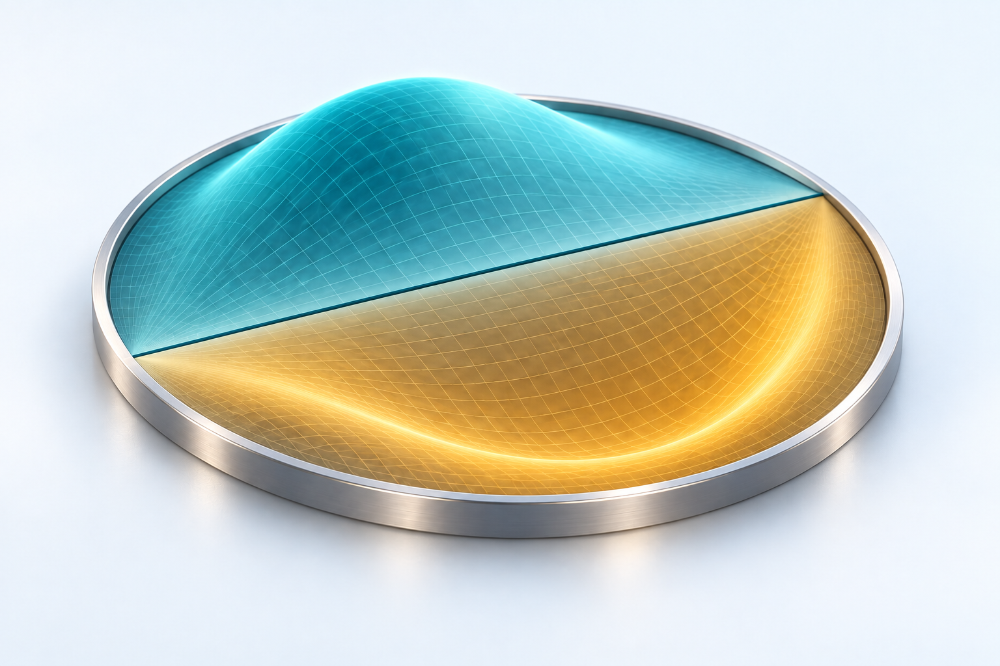

Courses
Lecture notes, problem sets and projects, published openly.
Everything here is open. If you are not enrolled — a student somewhere else, someone teaching the same material, anyone who wants to read it — the notes are yours to read. They remain my copyright: please link to them rather than copying or redistributing them.
Courses I teach
Offered at Kennesaw State. Which of them runs in a given semester is in the KSU catalogue and on the registration system.

Mathematical Methods
From complex numbers to waves and fields. Build the mathematical tools that turn physical questions into equations you can solve.
Read morePrinciples of Physics I
Syllabus and assignments are on the LMS — lecture notes are not posted yet.
Calculus-based mechanics, oscillations, waves, and thermodynamics for physics and engineering majors.
Read moreIntroductory Physics Lab I
Lab manuals and schedules are on the LMS — lecture notes are not posted yet.
Mechanics experiments with an emphasis on uncertainty, model comparison, and defensible conclusions.
Read moreResearch mentoring (Direct Method)
The four subject areas a mentored undergraduate can work in. The notes are the background reading for a project, not a taught course.